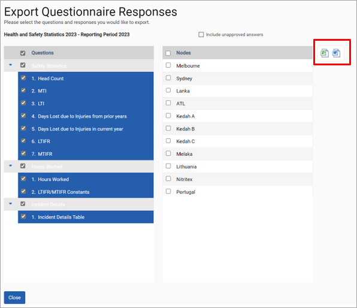
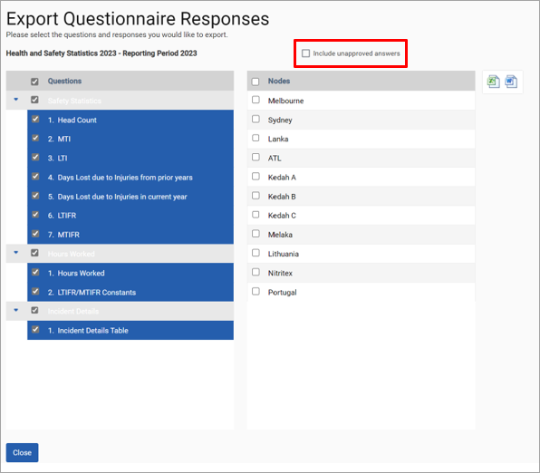

By clicking on ‘Reporting > Questionnaire Responses’ and then ‘Export Data’ next to each questionnaire, you can select which sections and questions you want to export for each node(s). Select the sections, questions and nodes and click the Excel export or a Word export icon of the questionnaire.

The Excel “By Questionnaire” report can export responses regardless of their approval status. Responses can now be exported as soon as they have been approved, even when other responses have yet to be approved.
Furthermore, the reporting page now contains a toggle (red outline) to include responses which have yet to be approved in the report. Selecting this tick-box and running the report will include all responses regardless of approval status. A “Status” column is available within the report to allow users to identify the approval status of each response.
